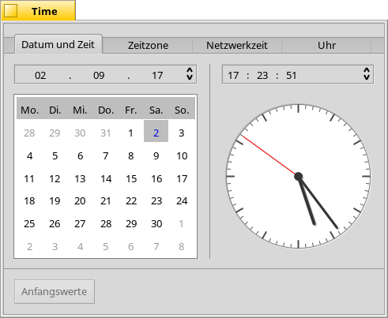
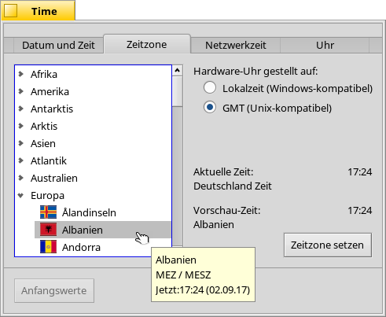
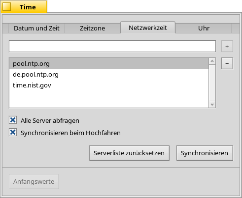
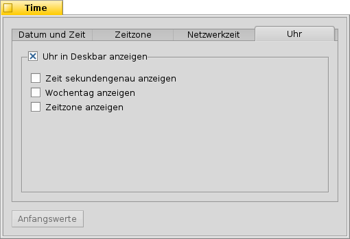

Deutsch
Deutsch Català
Català English
English Español
Español Français
Français Italiano
Italiano Magyar
Magyar Polski
Polski Português
Português Português (Brazil)
Português (Brazil) Română
Română Slovenčina
Slovenčina Suomi
Suomi Svenska
Svenska 中文 ［中文］
中文 ［中文］ Русский
Русский Українська
Українська 日本語
日本語 Datum & Zeit
Datum & Zeit
| Deskbar: | ||
| Ort: | /boot/system/preferences/Time | |
| Einstellungen: | ~/config/settings/networktime settings - Alle Einstellungen für das Synchronisieren übers Netzwerk ~/config/settings/RTC_time_settings - Die Einstellung der Hardware-Uhr (Lokalzeit oder GMT) ~/config/settings/Time settings - Die Einstellung der Zeitzone ~/config/settings/Time_preflet_window - Speichert die Position des Programmfensters etc. |
Das Fenster der Zeit-Einstellungen gliedert sich in vier Reiter:
 Datum und Zeit
Datum und Zeit

Links kann man den Tag durch einen Klick in den Kalender einstellen. Monat und Jahr lassen sich durch einen Klick ins entsprechende Feld und anschließender Betätigung der Pfeilsymbole oder mit den Cursortasten der Tastatur ändern.
Ebenso stellt man die Zeit. Oder man bewegt einfach die Zeiger der Uhr.
Zeitzone

Hier muss man einfach nur sein Land aus der Liste der Kontinete finden und auswählen und drücken. Bei Ländern mit mehreren Zeitzonen muss man noch eine Stufe tiefer aufklappen (wer hätte gedacht, dass es in Deutschland für "Büsingen" eine eigene Zeitzone gibt?).
Rechts wird die Zeit der aktuell eingestellten Zeitzone gezeigt, sowie eine Vorschau auf die Zeit der momentan ausgewählten Zeitzone.
Ebenfalls befindet sich auf der rechten Seite die Einstllung der Hardware-Uhr des Computers. Es gibt zwei Modi:
| zur Anzeige der Ortszeit; wird normalerweise benutzt wenn man auf dem Rechner auch noch Windows nutzt. | ||
| zur Anzeige der Greenwich Mean Time; das ist die UNIX-kompatible Einstellung. |
Netzwerkzeit
Datum und Zeit von Hand einzustellen ist für einen Rechner mit Internetverbindung eigentlich nicht mehr zeitgemäß. Es existieren öffentliche Server, die sehr genaue Zeitsignale liefern.
Mit / können NTP-Server der Liste hinzugefügt bzw. wieder entfernt werden.
Mit den Optionen darunter wird bei aktiviertem nicht nur der gerade ausgewählte verwendet. Durch stellt man sicher, dass die Uhrzeit regelmäßig abgeglichen wird.
Man kann die wenn funktionierende NTP-Server versehentlich gelöscht wurden und per den Abgleich manuell anstoßen. Synchronisieren lässt sich auch von der Kommandozeile aus (oder in einem Skript):
Time --update
Uhr

Der letzte Reiter zeigt die Optionen für die Uhranzeige in der Deskbar. Die oberste Checkbox dektiviert die Anzeige komplett. Die restlichen Einstellungen sind ebenso selbsterklärend.
Jeder Reiter zeigt den Button , mit dem die Einstellungen zurückgeholt werden, die beim Öffnen des Time Panels aktiv waren.